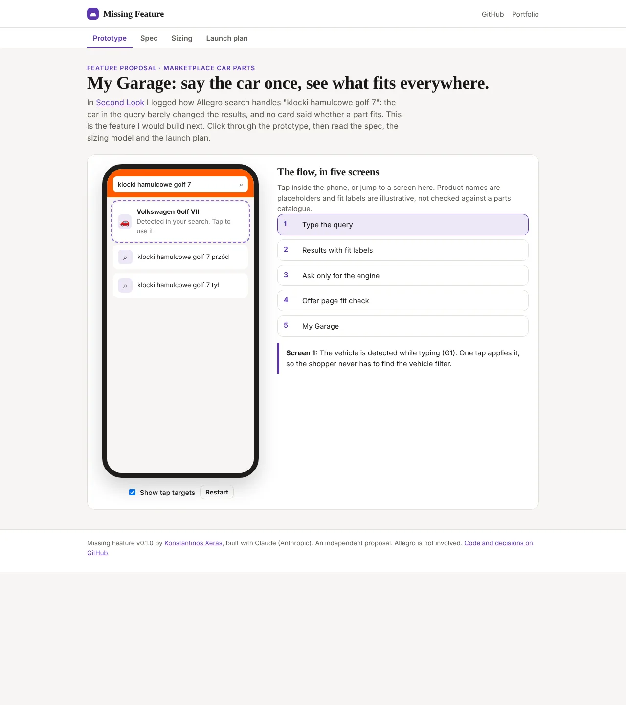

The problem
Drivers name their car in the query, but results do not use it. Checking fit is left to the shopper, listing by listing.

What it does
- Clickable prototype: detect, label, ask for the engine, check fit, save to garage.
- Spec with evidence and its limits, requirements, edge cases.
- Sizing model with nine inputs.
- Launch plan with risks and the decision to ask for.
Findings and decisions
Product call
Rank fitting parts first, never hide the rest
Fitment data is incomplete, so "no fitment data" is its own label and only "does not fit" moves down.
Product call
Ads as a separate decision
Moving non-fitting promoted listings down affects revenue the search team does not own, so it is tested separately.
What I would do next
- Test the prototype with five drivers.
- Build the parser and measure precision.
- Add the ads team view.